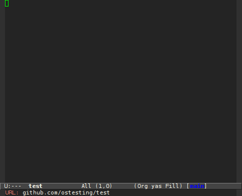
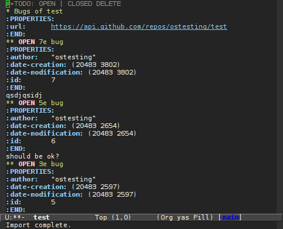
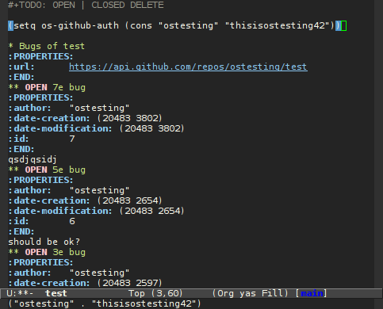
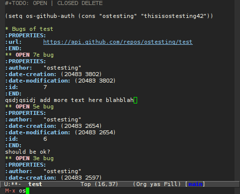
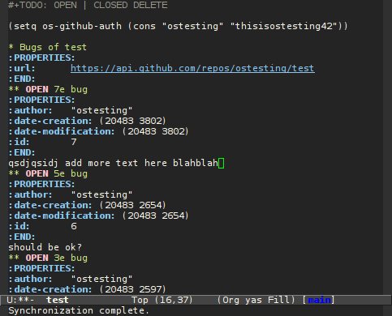
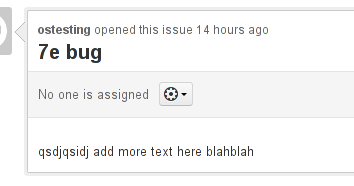
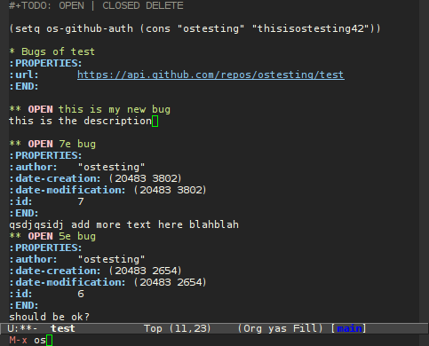
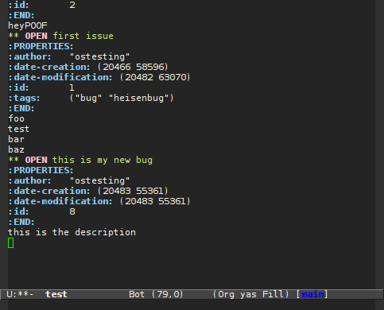

Org-sync tutorial
Table of Contents
An Org-sync tutorial
Introduction
Org-sync is a tool to synchronize online bugtrackers with org documents.
Installation
Check out Org-sync
TODO Fix the repo link
Make sure to checkout the same revision this tutorial was written with.
git clone git://orgmode.org/org-sync.git git checkout 8222ec31f
Org-element
Org-sync uses Nicolas Goaziou’s new parser, org-element. It’s in the contrib directory of Org-mode which is not included in vanilla Emacs.
If you don’t have it you can download a recent version from the Org-mode repo and move it to your Org-sync directory.
wget -O org-element.el 'https://code.orgmode.org/bzg/org-mode/raw/5057ae0fc2c0d551a83d3c3e9bd621b751db9f09/contrib/lisp/org-element.el'
Loading
Add Org-sync directory to your load-path and load the backend you want.
(add-to-list 'load-path "path/to/org-sync") (mapc 'load '("org-element" "os" "os-bb" "os-github" "os-rmine"))
Phew! Still there? Good because it’s starting to get interesting…
Tutorial
There is a demo video on youtube that covers the Bitbucket backend and conflicts handling. Check it out.
In this tutorial we will sync some bugs from this github repo.
There are 3 interactive command in Org-sync:
os-importto import a document in the current buffer at point.os-syncto sync all the imported documents in the buffer.oswhich does both depending on the buffer content. It callsos-importif there is nothing to sync in the buffer,os-syncotherwise.
Open a new buffer, switch to org-mode (M-x org-mode).
To import a document in a new buffer you can just run M-x os. It
prompts you for an URL.

Org-sync should import the issues from the repo.

Now, let’s try to change an issue. First you have to set a user/password to be able to modify the issue remotely.
Set the variable os-github-auth to like so:
(setq os-github-auth (cons "ostesting" "thisisostesting42")).
Here I have just typed it in my org-buffer, put the cursor after the
last closing paren and hit C-x C-e.

I’ve made some change in the first issue. Let’s sync with M-x os.

Once it’s done you should see a message indicating it.

You can check on github to make sure it worked:

Now, let’s try to add a new issue. Insert something like ** OPEN my
test issue. You can type a description under it if you want.

The next step is simple, just run M-x os. It will sync all issues
in the buffer. If you don’t see the new issue, it was probably added
at the bottom of the list, just scroll down you buffer.

How to write a new backend
Writing a new backend is easy. If something is not clear, try to read
the header in os.el or one of the existing backend.
;; backend symbol/name: demo ;; the symbol is used to find and call your backend functions (for now) ;; what kind of urls does you backend handle? ;; add it to os-backend-alist in os.el: (defvar os-backend-alist '(("github.com/\\(?:repos/\\)?[^/]+/[^/]+" . os-github-backend) ("bitbucket.org/[^/]+/[^/]+" . os-bb-backend) ("demo.com" . os-demo-backend))) ;; if you have already loaded os.el, you'll have to add it ;; manually in that case just eval this in *scratch* (add-to-list 'os-backend-alist (cons "demo.com" 'os-demo-backend)) ;; now, in its own file os-demo.el: (require 'org-sync) ;; this is the variable used in os-backend-alist (defvar os-demo-backend '((base-url . os-demo-base-url) (fetch-buglist . os-demo-fetch-buglist) (send-buglist . os-demo-send-buglist)) "Demo backend.") ;; this overrides os--base-url. ;; the argument is the url the user gave. ;; it must return a cannonical version of the url that will be ;; available to your backend function in the os-base-url variable. ;; In the github backend, it returns API base url ;; ie. https://api.github/reposa/<user>/<repo> (defun os-demo-base-url (url) "Return proper URL." "http://api.demo.com/foo") ;; this overrides os--fetch-buglist ;; you can use the variable os-base-url (defun os-demo-fetch-buglist (last-update) "Fetch buglist from demo.com (anything that happened after LAST-UPDATE)" ;; a buglist is just a plist `(:title "Stuff at demo.com" :url ,os-base-url ;; add a :since property set to last-update if you return ;; only the bugs updated since it. omit it or set it to ;; nil if you ignore last-update and fetch all the bugs of ;; the repo. ;; bugs contains a list of bugs ;; a bug is a plist too :bugs ((:id 1 :title "Foo" :status open :desc "bar.")))) ;; this overrides os--send-buglist (defun os-demo-send-buglist (buglist) "Send BUGLIST to demo.com and return updated buglist" ;; here you should loop over :bugs in buglist (dolist (b (os-get-prop :bugs buglist)) (cond ;; new bug (no id) ((null (os-get-prop :id b) '(do-stuff))) ;; delete bug ((os-get-prop :delete b) '(do-stuff)) ;; else, modified bug (t '(do-stuff)))) ;; return any bug that has changed (modification date, new bugs, ;; etc). they will overwrite/be added in the buglist in os.el ;; we return the same thing for the demo. ;; :bugs is the only property used from this function in os.el `(:bugs ((:id 1 :title "Foo" :status open :desc "bar."))))
That’s it. A bug has to have at least an id, title and status
properties. Other recognized but optionnal properties are
:date-deadline, :date-creation, :date-modification, :desc.
Any other properties are automatically added in the PROPERTIES block
of the bug via prin1-to-string and are read back by org-sync. All
the dates are regular emacs time object. For more details you can
look at the github backend in os-github.el.
More information
You can find more in the os.el commentary headers.
There is also demo video on youtube that covers the Bitbucket backend and conflicts handling. Check it out.